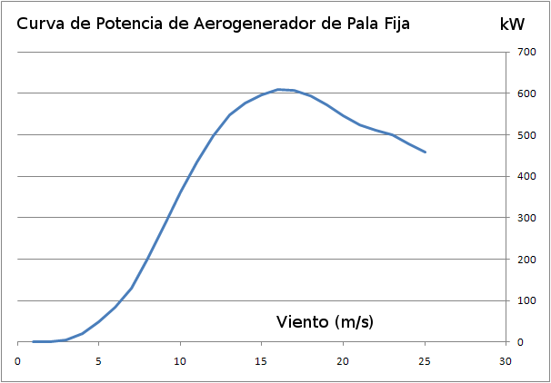

Desde el punto de vista de producción, un aerogenerador está caracterizado por una "curva de producción" que da la potencia que produce en función del viento incidente.
Esta curva puede tener varias formas, dependiendo de la tecnología usada en el aerogenerador. Los primeros aerogeneradores industriales tenían una curva como la mostrada en la figura 1.

Fig 1.En estos aerogeneradores el angulo de ataque de las palas (pitch) es fijo. Se puede observar que la potencia generada al aumentar el viento a partir de un cierto valor de viento (unos 16 m/s en el ejemplo de la figura 1) se reduce en vez de aumentar. Este comportamiento deriva de la respuesta aerodinámica de la pala, que evita el embalamiento del Tren de Potencia cuando el viento sube por encima de un cierto valor: es decir, este tipo de aerogenadores incluye un mecanismo de seguridad de embalamiento "per se".
Posteriormente se introdujeron los aerogeneradores de angulo de pala variable, que se diferenciaban de los anteriores en disponer de mecanismos que permiten regular el angulo de Pitch: esta capacidad se utiliza para controlar la potencia, y también para frenar el Tren de Potencia. La curva de 'Potencia vs Viento' de estos aerogeneradores se muestra en la figura siguiente.
 Fig 2
Fig 2
Posteriormente se desarrollaron los aerogeneradores de pala con pitch variable y velocidad del Tren de Potencia también variable. La diferencia con los anteriores es que la velocidad de rotación del Tren de Potencia varia en función del viento, con el objeto de tener el mejor aprovechamiento del mismo. Esto exige que el convertidor de la energía cinética de rotación del Tren de Potencia a energía eléctrica (el Generador Eléctrico) sea mas sofisticado. En los modelos anteriores, y precisamente debido al tipo de convertidor eléctrico (típicamente un generador asíncrono con rotor cortocicuitado - o de jaula de ardilla-), al Tren de Potencia se le hacer funcionar a una velocidad casi fija (con variaciones del orden del 4%), lo que implica un aprovechamiento aerodinámico no optimo a velocidades bajas de viento.
Existen diseños intermedios que aparecieron antes de los aerogeneradores de velocidad variable que utilizan dos generadores eléctricos ( o uno solo, pero con posibilidad de dos conexiones eléctricas diferentes simulando efectivamente dos generadores) que tienen dos velocidades de funcionamiento en producción (dos velocidades síncronas), con lo que presentan un cierto grado de adaptación a vientos bajos. Se conocen como "de dos velocidades".
Teniendo en cuenta estas variaciones posibles, en la figura siguiente se muestra una curva típica de un aerogenerador con control de pitch y dos velocidades, y el conjunto de parámetros de viento que se utilizan en el control de un aerogenerador.
 Fig 3.
Fig 3.
En este gráfico se muestra la expresión "cutin" que corresponde con el concepto de 'comienzo del proceso de conexión del aerogenerador a la red y paso a producción'. Similarmente, existe el concepto de "cutout" que corresponde con el concepto de 'cese de producción y desconexión de la red'. Los parámetros básicos son el Viento Nominal y la Potencia Nominal: esta es la potencia máxima que es capaz de producir el aerogenerador, lo que ocurre cuando el viento es igual o superior al nominal.
Es importante tener presente que la forma de esta curva depende de la densidad del aire, que influye también en el valor del Viento Nominal, no así en la Potencia Nominal, que está limitada solo por la capacidad del generador eléctrico.
En la siguiente tabla se presenta la descripción de los valores de viento indicados en el gráfico anterior.
|
V min para orientación |
Por debajo de este nivel de viento el Controlador no considera que merece la pena orientar la Góndola. |
|
V min para cutin |
Por debajo de este valor, el Controlador no inicia el proceso de conexión a la red. |
|
V min cambio de grande a pequeño |
En el caso de los aerogeneradores de dos velocidades, este valor corresponde al valor minimo al que se usa el generador "grande" |
|
V max cambio de pequeño a grande |
En el caso de los aerogeneradores de dos velocidades, este valor corresponde al valor maximo al que se usa el generador "pequeño" |
|
V max para cutin |
Cuando el aerogenerador está parado y el régimen de viento es muy alto, el Controlador no arrancará el proceso de cutin si este viento es superior a este valor. |
|
V max producción continua |
Este valor de viento es el máximo en el que el Controlador mantiene la producción de forma continua. |
|
V max con limite de tiempo |
Cuando el viento supera, durante un corto periodo de tiempo, el valor de 'V max producción continua', el Controlador mantendrá la producción. Sin embargo, si se supera este valor durante un periodo prefijado el Controlador iniciará el proceso de salida de producción y desconexión de la red (cutout) |
|
V max absoluto |
Si el viento llega a este valor el Controlador iniciará el proceso de cutout de forma inmediata. |